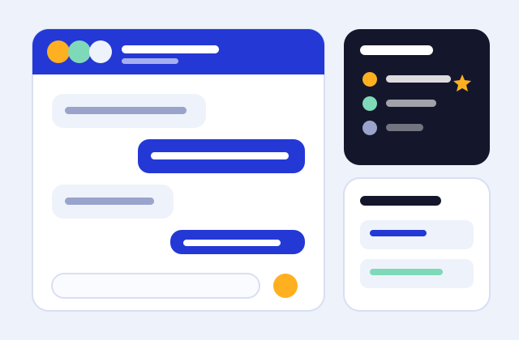
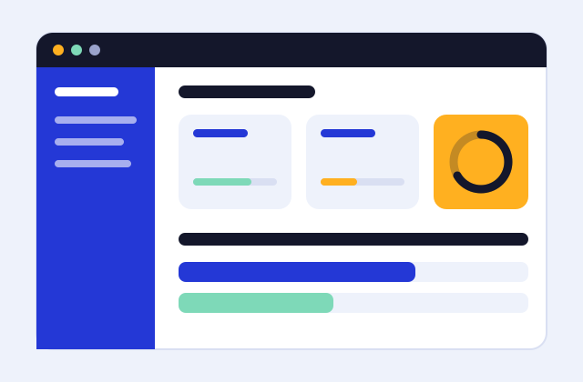

Backend
The stack behind both of my projects
- Spring Boot
- Spring Security
- Spring Data JPA
- REST APIs
- JWT Authentication
Open to entry-level Java Developer roles
Hi, I'm Nadim, a recent MCA graduate from Delhi. I work with Spring Boot, Spring Security and MySQL, and I like turning a rough idea into a tested, documented API.
I'm a recent MCA graduate looking for my first Java Developer role. I want to work on real projects, learn from a team, and grow into a solid software professional.
My strongest ground is Core Java and object-oriented design. I'm comfortable designing MySQL schemas and writing the queries that sit on top of them, and I pick up new frameworks quickly.
The stack behind both of my projects

A full-stack web app where university students discover, create and join study groups. It includes real-time chat, session scheduling and a ratings leaderboard.

A desktop application built with Core Java and MySQL to manage courses and student data.
I'm available for entry-level Java Developer roles. Email is the fastest way to reach me.